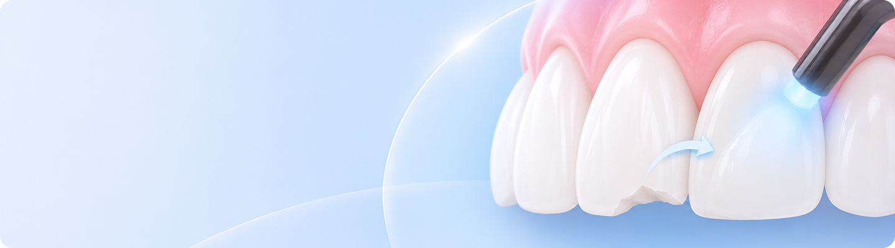
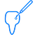
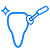
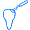

앞니레진이란?
치아색과 유사한 복합레진을 치아 표면에 직접 쌓아 올리고, 빛으로 굳힌 뒤 형태와 광택을 다듬는 방식입니다.
또한 치아와 잘 접착되며 치아 삭제를 최소화할 수 있어 기존의 금속 재료보다 더 보존적인 치료가 가능합니다.

치아 색과 유사한 재료로 작은 틈이나 손상 부위를
자연스럽게 보완합니다.
이런경우 앞니레진를 고려할 수 있어요
-
 치아가 마모되어 시린 증상이 있는 분
치아가 마모되어 시린 증상이 있는 분
-
앞니에 충치가 생긴 분
-
사고나 충격으로 치아 모서리가 깨진 분
-
치아 끝이 짧거나 모양이 고르지 않은 분
앞니레진 치료과정
-

- 진단 · 색상 선택
- 치아 상태를 확인하고, 비슷한
레진 색을 선택합니다.
-

- 치아 표면 정리
- 치태와 이물질을 제거하고,
습기가 닿지 않도록
격리합니다.
-

- 접착 처리
- 치아 표면을 미세하게 거칠게
만들고 접착제를 적용합니다.
-

- 레진 충전 · 성형
- 치아색 레진을 손상 부위에 층층이
쌓아 올립니다.
-

- 경화 · 표면 마무리
- 레진을 굳힌 뒤, 표면을 다듬고
광택을 내어 마무리합니다.
-

- 교합 조정 · 확인
- 고정력과 교합을 확인하고,
불편한 부분을 조정합니다.
-
- 진단 · 색상 선택
- 치아 상태를 확인하고, 비슷한
레진 색을 선택합니다.
-
- 치아 표면 정리
- 치태와 이물질을 제거하고,
습기가 닿지 않도록
격리합니다.
-
- 교합 조정 · 확인
- 고정력과 교합을 확인하고,
불편한 부분을 조정합니다.
※ 치료 과정과 소요 기간은 개인의 치아 상태에 따라 달라질 수 있습니다.
앞니레진 치료 후 주의 사항
-
- 01 색소가 강한 음식 주의
- 치료 후 2~3일 동안은 커피, 홍차, 콜라 등 착색을 유발할 수 있는 음료를 가급적 피해주세요.
- 02 단단 & 자극적 음식 피하기
- 치료 직후에는 보철물 파손 위험이 있으므로
견과류, 오징어 등 딱딱하거나 질긴 음식 섭취를 피해주세요.
- 03 정기 검진 받기
- 정기적인 검진을 통해 수복 상태를 확인하는 것이 권장됩니다.
- 04 수술 부위 청결 유지
- 수술 부위를 혀나 손가락으로 만지지 마세요.